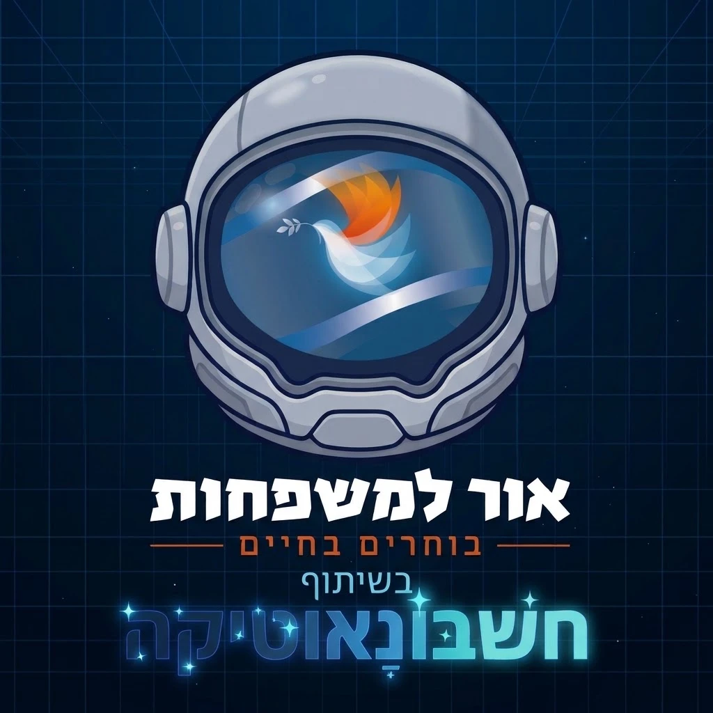

פרויקט החונכים
אני נתנאל, ואני אח שכול.
אחרי האובדן ראיתי שאחיי מאבדים את המוטיבציה ללמוד. בשביל אחי הקטן בניתי את חשבונאוטיקה, כדי לתת לו כלי לתרגל בצורה יותר חוויתית.
המיזם הזה הוא מתנה ופרגון ממני. הוא לא שיווק ואין בו שום דבר למכור.
מה זה חשבונאוטיקה
מערכת לתרגול חשבון לכיתות ב' עד ז', בנויה ממשחקים וחידות.
אפשר לנסות בלי הרשמה. לא נפתח כאן? אפשר לפתוח את הדמו במסך מלא
מה המיזם
- המיזם ללא עלות, בחינם לחלוטין.
- הוא נעשה בשיתוף סטודנטים שמקבלים מלגה מעמותת "אור למשפחות".
- הסטודנטים הם החונכים.
אפשר לכתוב לי
להורים
אם אתם הורים במשפחה שכולה, והילדים שלכם בכיתות ב' עד ז', הם יכולים להשתמש בחשבונאוטיקה בליווי חונך. בחינם.
אשמח לשמועמה הילד מקבל ומה אתם רואים
משחקי חשבון וחידות לפי הכיתה של הילד, מכפל ושברים ועד משוואות ואחוזים. יש מצב תרגול רגוע, ויש מצב אתגר עם שעון. הילד נכנס מקישור אישי, בלי סיסמה, בטלפון, בטאבלט או במחשב.
ומה שההורים מקבלים:
- יעד תרגול יומי קצר שאתם קובעים, עד 30 דקות, ורצף ימים
- אפשר לקבוע יחד עם הילד פרס
- דוח התקדמות: זמן משחק שבועי, באילו נושאים הוא חזק ובאילו הוא נתקע, והאם הוא מתאתגר או תקוע באותה רמה
- תזכורות בוואטסאפ ובהתראות, והודעה אליכם אם הוא לא תרגל יומיים
מספיק להציץ בדוח פעם בשבוע. ומומלץ לשבת איתו כל כמה ימים: זו חוויה משפחתית שעוזרת לו להתמיד ולהרגיש בטוח לטעות.
ככה המערכת עוזרת לכם כחונכים
- בוחרים לילד משחק ורמה מסוימים כתרגול בין המפגשים, או רצף של כמה שלבים. המשימה מחכה לו מסומנת כשהוא נכנס
- לפני המפגש רואים כמה זמן הוא תרגל, מה אחוז הדיוק שלו, ובאילו נושאים הוא חזק ובאילו נתקע, במפת כישורים
- לכל רמה יש מדריך קצר לחונך: איך לעזור לילד שנתקע בדיוק שם
- המערכת מסמנת ילד שלא תרגל שבוע, ואפשר לשלוח להורה תזכורת בלחיצה, או סיכום שבועי מוכן לוואטסאפ
- הילד נכנס מקישור אישי, בלי סיסמה
אפשר גם פשוט לכתוב ולשאול, בלי שום התחייבות. הודעה בוואטסאפ
הדף הזה לא אוסף פרטים. מי שרוצה, כותב לי בוואטסאפ.